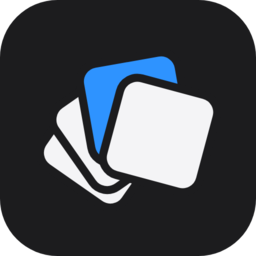

Superdock next to 10 other Mac dock apps
Short answer: most of these apps do something Superdock does not, and for many people one of them is the better choice. Superdock is for one case: you run several Chrome profiles and want each one as its own Dock icon, in a Dock that looks like Apple's. If that is not your problem, the last column tells you which app to look at.
I make Superdock, so read this as a maker's view. Every row links to the other app's own site, which is where its details and price come from. I read them in September 2026 and checked DockSpark and Okie Dockie again on 9 October. Prices change, so check the link before you buy.
The table
| App | What it is | Price | An icon per Chrome profile? | Pick it if |
|---|---|---|---|---|
| Superdock | Replaces the Dock with a copy of Apple's that draws one icon for each Chrome profile. | The dock is free. Chrome profile icons are $7.99 once for 5 Macs, after 14 days free. | Yes, from the one Chrome you already run. | You switch between Chrome profiles all day. |
| Apple's Dock | The Dock that ships with macOS. | Included | No. One icon for the whole of Chrome. | You have one Chrome profile and one screen. |
| DockDoor | Adds window previews on hover and a switcher to Apple's Dock. | Free. Pro is $20 once for 3 Macs. | No. Profiles stay under one icon. | You want previews and are otherwise happy with Apple's Dock. |
| AltTab | A window switcher with thumbnails. It does not touch the Dock. | Free and open source. Pro adds search and styles. | No. | A Windows-style Alt-Tab is the only thing you miss. |
| DockSpark | Hover a browser's icon in Apple's Dock and a panel lists its profiles and a private window. Works with ten browsers, including Safari, Arc and Firefox. | Free for one browser and three profiles. $0.99 to $2.99 once at the early price. | Switching only. Chrome keeps one icon. | You use profiles in Safari, Arc or Firefox, or you only need to open the right one. |
| Okie Dockie | Builds a small launcher app for each Chrome profile and puts it in Apple's Dock. Also adds window snapping and Option-Tab. | Snapping and Option-Tab are free. Chrome profiles are $19 once for 3 Macs. | Yes, as one launcher app per profile. | You want to keep Apple's Dock and you want window snapping too. |
| Parallel Spaces | Runs each Chrome profile as its own copy of the browser. | $4.99 once on the Mac App Store. | Yes, as separate browsers. You sign in again in each one. | You want a profile that shares nothing with the others. |
| uBar | A Windows-style taskbar with window buttons, on any edge and on each screen. | $30 once for 2 Macs. | No. It groups by app. | You want a taskbar, not a Dock. |
| Sidebar | A Dock replacement you can restyle, with a start menu, stacks and window snapping. | Paid after a 7-day trial. Its site does not show the price. | No. | You want to redesign the Dock. |
| DockFix | A Dock replacement built around appearance: colours, custom icons, widgets and a file shelf. | €14.99 once. | No. | How the Dock looks is the point. |
| ExtraDock | Adds extra floating docks on any screen, with widgets and shelves. | $14.99 a year, or $27.90 once per Mac. | No. | You want more docks, not a different one. |
Four ways to split Chrome profiles, and what each costs you
Only four apps in the table deal with profiles at all, and they work differently.
- Parallel Spaces runs a separate browser per profile. Each one has a real icon, and each one needs its own sign-in and its own memory.
- Okie Dockie keeps your existing profiles and adds a launcher app for each to Apple's Dock.
- DockSpark keeps one Chrome icon and shows the profiles in a panel when you hover it. You cannot see which profiles are open until you hover.
- Superdock replaces the Dock, so it can draw the icons itself: one per profile, with that profile's picture and only its windows behind it. Chrome stays one app.
The price of the Superdock approach is that you are running a different Dock. It needs the Accessibility permission to see other apps' windows, and it is not on the Mac App Store.
What Superdock does not do
- It splits profiles for Google Chrome only. Safari, Arc, Edge and Firefox show as ordinary app icons. DockSpark covers those.
- It does not snap windows into layouts. Okie Dockie and Sidebar do.
- It has no themes, widgets or start menu. DockFix and Sidebar do.
- It does not separate two profiles that have the same name, because it tells them apart by the name in the window title.

Download free The dock is free. Chrome profile icons: 14 days free, then $7.99 once. macOS 14 or later.